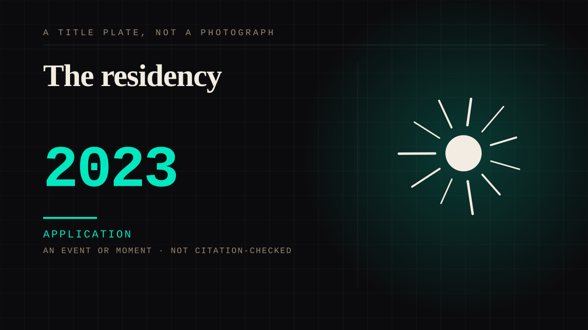

An event or moment · 2023 · Assembled fandom
The residency
A single artist booking a stadium for many consecutive nights, generating a physical economy around one very large parasocial bond.

Concentration. Every other configuration in this file has a large number of small bonds; this is one enormous one, and its entire economy is downstream of it.
Application. One-sided attachment put to work on purpose. Creator economies, community, fandom as infrastructure, and the things that genuinely help people. Not automatically good - a tool with an obvious use is a tool that will also get a bad one.
Manipulation. One-sided attachment engineered for somebody else's benefit. Paid intimacy, parasocial persuasion, sasaeng, grief extraction, the streak. The lane that pays the bills and the lane that causes the most harm, frequently at the same time.
Where it sits
2010 2010+ · 2023 2026
Provenance · 1 source record(s)
- needs-sourceNo specific claim is recorded against this source. The record is a pointer to the work in general; the entry's own prose is the argument and is not sourced line by line.No source identified yet. The seed note this entry was carrying named the entry's own subject rather than a reference, so it has been withdrawn rather than left to read as a citation.
Not yet stood behind. The entry is real. A person has not read the citation and confirmed it, so treat the date as approximate until they do.
Connected · 2 out, 0 in
Reported as a story
It sits in
The full timeline → · The database → · See it in the atlas →